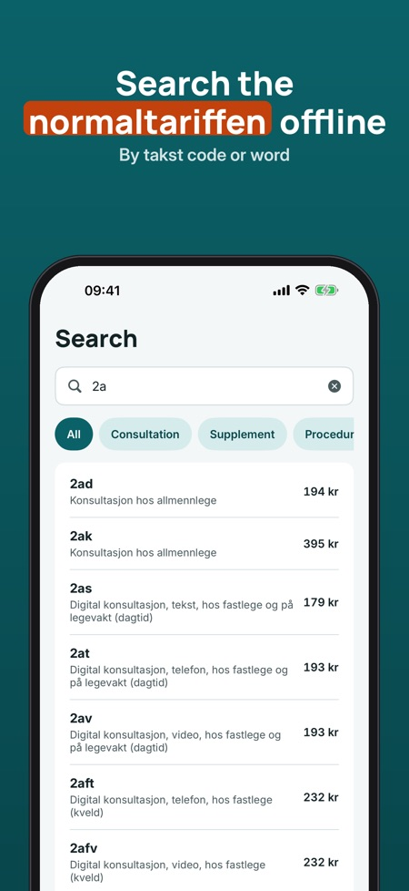
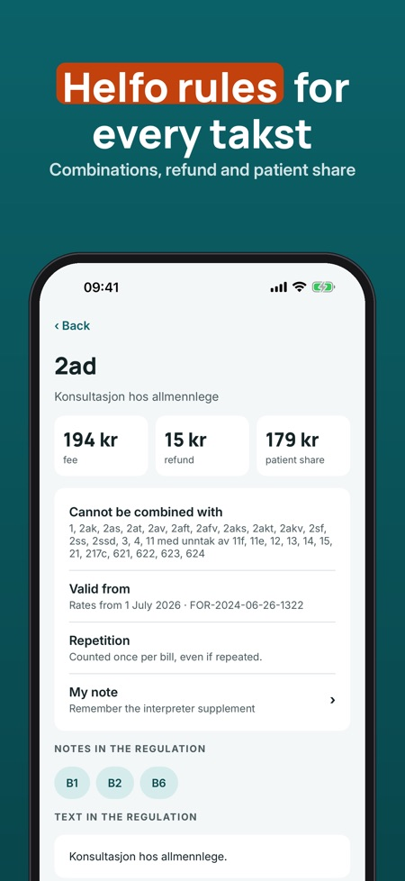
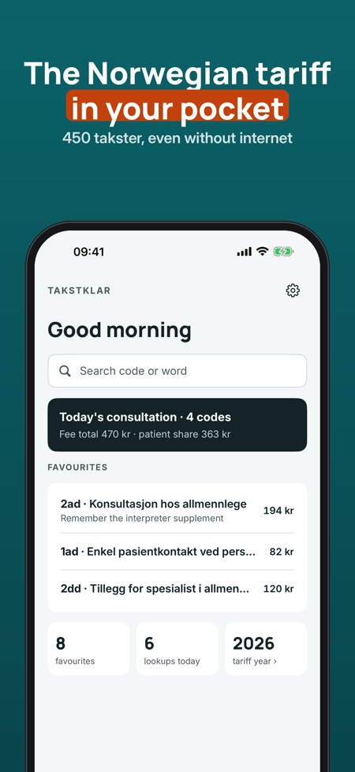

Norwegian GP tariff look-up. Find the right Norwegian takst code fast, even offline. Search by code or word, see rates and invalid combinations, and build the takster for a consultation.



Takstklar is a look-up tool for doctors in Norway: search the normaltariffen, see the rates and rules for every takst, and put together the takster for a visit, all stored on your phone.
The table is the takster in chapter II of the regulation on reimbursement of expenses for examination and treatment by a doctor (FOR-2024-06-26-1322), with rates from 1 July 2026. Contains data under the Norwegian Licence for Open Government Data (NLOD 2.0) made available by Lovdata.
Search, takst details, 5 favourites and the last 10 look-ups work without a purchase. The full version is a one-time purchase that unlocks the consultation with total, templates, notes, unlimited favourites and the whole history. No subscription.
Takstklar is a reference tool and is not affiliated with the Norwegian Medical Association, Helfo or the Ministry of Health and Care Services. Always check rates and rules against the current tariff. You are responsible for your own billing.